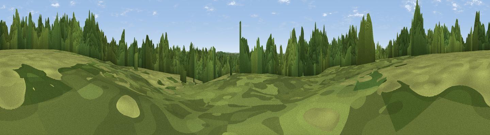

Barkham Hill
#44473 in England · top 74% of its area beats it · near BarkhamWhere it is
The exact computed spot (SU 77921 67586). Click the marker for map links.
The view, rendered

A 360° render of this exact spot computed from the terrain model, tree cover and land cover — summer colours, afternoon light, calibrated against photographs of famous viewpoints. Real trees, hedges and buildings will differ in detail.
The panorama
Grey silhouette: terrain skyline in each direction (720 bearings, Earth curvature and refraction included). Dashed green: skyline with trees (+15 m) and buildings (+8 m) as obstacles. Blue strip: how far the ground is visible on each bearing.
Where the view opens
Wedge length = distance to the farthest visible ground on that bearing (vegetation-aware). Rings at 10, 25 and 50 km.
What fills the view
46% woodland · 41% grassland · 8% built-up · 4% cropland
Angular shares of the visible panorama (visual magnitude), not map area. Landscape diversity 0.46 (0–1 Shannon).
Key numbers
More beautiful places nearby
The staircase of upgrades: each row has a higher view potential than everything closer. Driving times are estimates from straight-line distance, calibrated against real road routing — check an actual route before setting out.
| Place | Direction | Drive | Score |
|---|---|---|---|
| Gravelpit Hill | WNW · 1 km | ~3 min | 29.9 |
| Viewpoint near Finchampstead | SSE · 4 km | ~9 min | 42.8 |
| Viewpoint near Crowthorne | SE · 7 km | ~15 min | 45.4 |
| Viewpoint near Theale | WNW · 14 km | ~25 min | 48.1 |
| High Curley Hill | ESE · 15 km | ~26 min | 49.7 |
| Viewpoint near Whitchurch-on-Thames | NW · 17 km | ~30 min | 55.0 |
| Viewpoint near Upper Hale | SSE · 18 km | ~32 min | 58.3 |
| Horsedown Common | S · 20 km | ~33 min | 59.0 |
51.40196, -0.88124 · source: osm peak · position refined by local search. Computed location — check access rights before visiting.